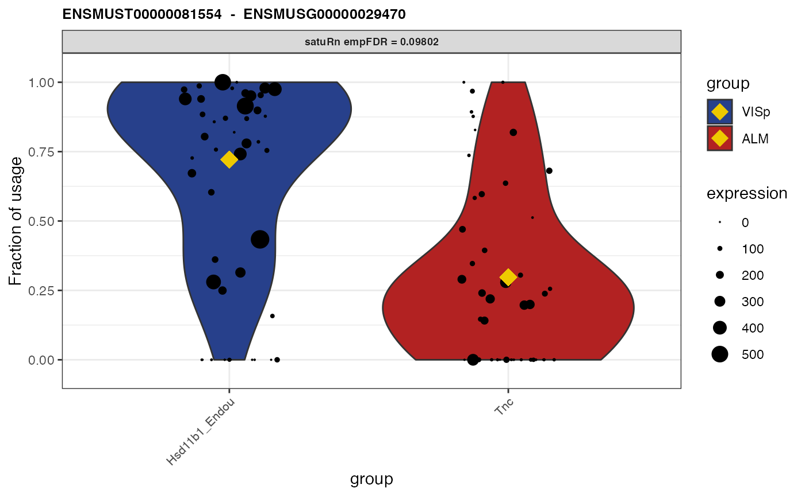
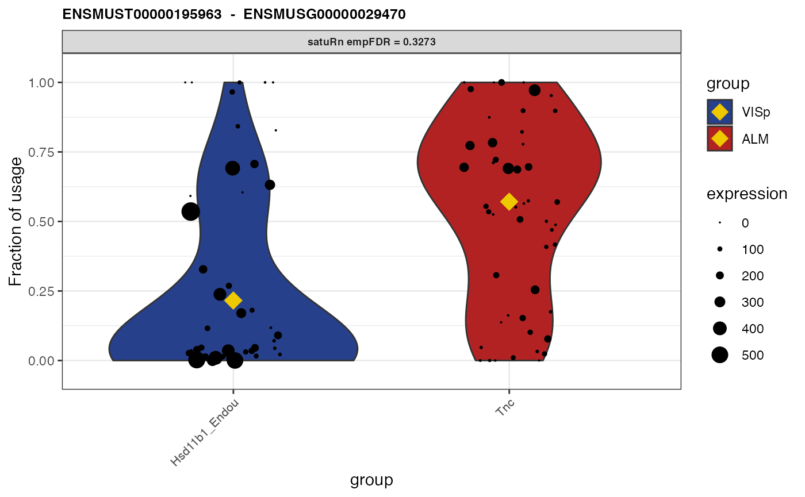
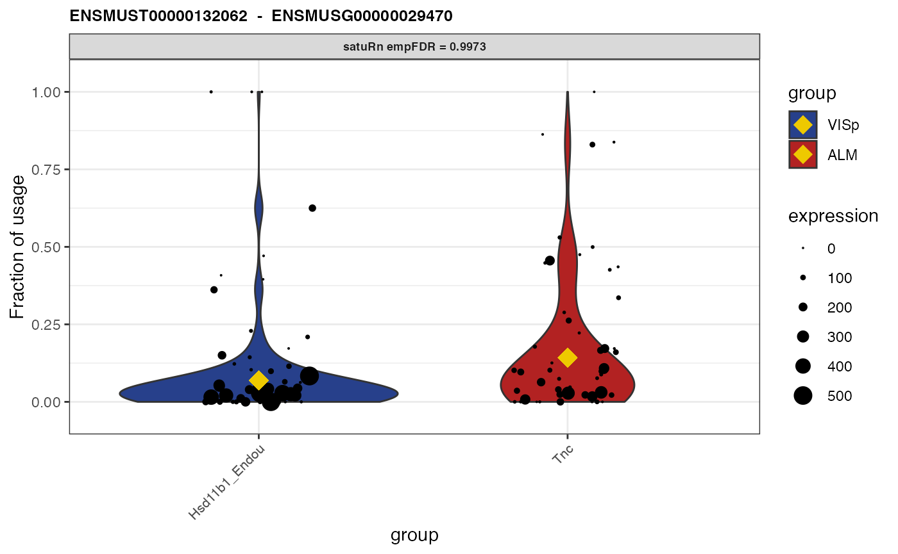

Vignette.Rmd
data(Tasic_counts_vignette)
data(Tasic_metadata_vignette)
ah <- AnnotationHub() # Load the annotation resource.
all <- query(ah, "EnsDb") # Query for all available EnsDb databases
ahEdb <- all[["AH75036"]] # for Mus musculus
txs <- transcripts(ahEdb)
Tasic_metadata_vignette$group <- paste(Tasic_metadata_vignette$brain_region,Tasic_metadata_vignette$cluster,sep=".")
# Get the transcript information in correct format
txInfo <- as.data.frame(matrix(data = NA, nrow = length(txs), ncol = 2))
colnames(txInfo) <- c("isoform_id","gene_id")
txInfo$isoform_id <- txs$tx_id
txInfo$gene_id <- txs$gene_id
rownames(txInfo) <- txInfo$isoform_id
# Remove transcripts that are the only isoform expressed of a certain gene
rownames(Tasic_counts_vignette) <- sub("\\..*", "", rownames(Tasic_counts_vignette))
txInfo <- txInfo[txInfo$isoform_id %in% rownames(Tasic_counts_vignette),]
txInfo <- subset(txInfo,duplicated(gene_id) | duplicated(gene_id, fromLast=TRUE))
Tasic_counts_vignette <- Tasic_counts_vignette[which(rownames(Tasic_counts_vignette) %in% txInfo$isoform_id),]
filter_all_edgeR_stringent <- filterByExpr(Tasic_counts_vignette,
design = NULL,
group = Tasic_metadata_vignette$brain_region,
lib.size = NULL,
min.count = 10,
min.total.count = 0,
large.n = 0,
min.prop = 0.7)
table(filter_all_edgeR_stringent)## filter_all_edgeR_stringent
## FALSE TRUE
## 14476 16064
Tasic_counts_vignette <- Tasic_counts_vignette[filter_all_edgeR_stringent,]
# Update txInfo according to the filtering procedure
txInfo <- txInfo[which(txInfo$isoform_id %in% rownames(Tasic_counts_vignette)),]
# remove transcripts that are the only isoform expressed of a certain gene (after filtering)
txInfo <- subset(txInfo,duplicated(gene_id) | duplicated(gene_id, fromLast=TRUE))
Tasic_counts_vignette <- Tasic_counts_vignette[which(rownames(Tasic_counts_vignette) %in% txInfo$isoform_id),]
# satuRn requires the transcripts in the rowData and the transcripts in the count matrix to be in the same order.
txInfo <- txInfo[match(rownames(Tasic_counts_vignette),txInfo$isoform_id),]
sumExp <- SummarizedExperiment::SummarizedExperiment(assays=list(counts=Tasic_counts_vignette),
colData = Tasic_metadata_vignette,
rowData = txInfo)Runs ± 10 seconds.
Sys.time()## [1] "2020-11-17 17:15:46 CET"
sumExp <- satuRn::fitDTU(object = sumExp,
parallel = TRUE,
BPPARAM = BiocParallel::bpparam(),
verbose = TRUE)##
|
| | 0%
|
|== | 2%
|
|==== | 5%
|
|===== | 8%
|
|======= | 10%
|
|========= | 12%
|
|========== | 15%
|
|============ | 18%
|
|============== | 20%
|
|================ | 22%
|
|================== | 25%
|
|=================== | 28%
|
|===================== | 30%
|
|======================= | 32%
|
|======================== | 35%
|
|========================== | 38%
|
|============================ | 40%
|
|============================== | 42%
|
|================================ | 45%
|
|================================= | 48%
|
|=================================== | 50%
|
|===================================== | 52%
|
|====================================== | 55%
|
|======================================== | 58%
|
|========================================== | 60%
|
|============================================ | 62%
|
|============================================== | 65%
|
|=============================================== | 68%
|
|================================================= | 70%
|
|=================================================== | 72%
|
|==================================================== | 75%
|
|====================================================== | 78%
|
|======================================================== | 80%
|
|========================================================== | 82%
|
|============================================================ | 85%
|
|============================================================= | 88%
|
|=============================================================== | 90%
|
|================================================================= | 92%
|
|================================================================== | 95%
|
|==================================================================== | 98%
|
|======================================================================| 100%
Sys.time()## [1] "2020-11-17 17:18:23 CET"
group <- as.factor(Tasic_metadata_vignette$group)
design <- model.matrix(~0+group)
colnames(design) <- levels(group)
L <- matrix(0, ncol = 2, nrow = ncol(design))
rownames(L) <- colnames(design)
colnames(L) <- c("Contrast1","Contrast2")
L[c("VISp.L5_IT_VISp_Hsd11b1_Endou","ALM.L5_IT_ALM_Tnc"), 1] <- c(1,-1)
L[c("VISp.L5_IT_VISp_Hsd11b1_Endou","ALM.L5_IT_ALM_Tmem163_Dmrtb1"), 2] <- c(1,-1)
L## Contrast1 Contrast2
## ALM.L5_IT_ALM_Tmem163_Dmrtb1 0 -1
## ALM.L5_IT_ALM_Tnc -1 0
## VISp.L5_IT_VISp_Hsd11b1_Endou 1 1
group1 <- rownames(colData(sumExp))[colData(sumExp)$group == "VISp.L5_IT_VISp_Hsd11b1_Endou"]
group2 <- rownames(colData(sumExp))[colData(sumExp)$group == "ALM.L5_IT_ALM_Tnc"]
plots <- satuRn::plotDTU(object = sumExp, contrast = "Contrast1", groups = list(group1,group2), coefficients = list(c(0,0,1),c(0,1,0)), summaryStat = "model", transcripts = c("ENSMUST00000081554","ENSMUST00000195963","ENSMUST00000132062"),genes = NULL,top.n = 6)
# to have same layout as in our paper
for (i in seq_along(plots)) {
current_plot <- plots[[i]] +
scale_fill_manual(labels = c("VISp","ALM"), values=c("royalblue4", "firebrick")) +
scale_x_discrete(labels= c("Hsd11b1_Endou","Tnc"))
print(current_plot)
}## Warning: Removed 2 rows containing non-finite values (stat_ydensity).## Warning: Removed 2 rows containing missing values (geom_point).
## Warning: Removed 2 rows containing non-finite values (stat_ydensity).
## Warning: Removed 2 rows containing missing values (geom_point).
## Warning: Removed 2 rows containing non-finite values (stat_ydensity).
## Warning: Removed 2 rows containing missing values (geom_point).